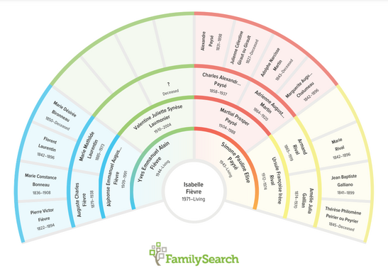

I have the strong conviction that my ancestors influenced by their lives part of my construction and consequently who I am.

Service and Creativity
My mother was a nurse’s aide and worked with sick children in the hospital HRS in Giens when she was a young adult. She sewed, knitted, and embroidered and teached me to do the same. I learned crocheting too. I had the occasion to serve others all my life. For example, when I was a young adult, I crocheted toys for babies in a hospital and blankets for babies from families in need. My mother has a big sense of creativity and she transmitted it to me too. I apply it not only when I do handcrafts but also when I create a project.
Adaptation
My second great-father, Jean Baptiste Galliano, came from Piedmont, Italy with his parents to live in France. After having moved several times in my life, I came to live in Piedmont, 10 years ago. I see the mountains every day from my window and I remember the life adaptations that my mother ancestors had to make, including her. From my father's side, my great-mother, Valentine, was a child of public assistance. She also had to adapt a lot throughout her life as a child as well as a woman. During my life, I learned to adapt to situations and my environment. In Particular, I met people from all over the world and I have worked with people with different ways of thinking and acting.
Self Learn
My father's mother, Valentine, had to learn a lot in her life as mother of numerous children. She also learned to drive when she was already of an advanced age to make life more joyful for her husband who suffered from a big physical handicap after a heavy accident at work.
I have spent my whole life learning whether in person at school and university, in books, or online. I like to increase my skills to be successful in all my activities.